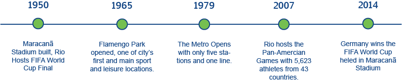

Venues of the 2016 Summer Olympics
Rio de Janeiro, Brazil
How did Rio Win its Bid?
The International Olympic Committee (IOC) picks the host city for the Olympics approximately 7 years before the Olympics. Factors that affect a winning city include accessibility, size and positive impact of the Olympics on the city.
Rio de Janeiro won on October 2, 2009. The other final competitors were Madrid, Chicago and Tokyo. This is the first time that South America will host the Olympic Games.
The Olympic Villiage, where athletes will reside during the Games, will be built in Barra, which is very close to both Riocentro and the Barra Olympic Park. After 2016 Olympics, the athelte's villiage will become luxury apartments to repopulate the area.
Many transportation systems are being expanded and updated to make moving around the city easier and quicker. This plan includes a new metro line (Linea 4) to connect Olympic Park and the city centre. The city is creating new traffic lanes exlusively for high capicity vehicles such as those from the Bus Rapid Transit.
Important Events Leading up to the 2016 Summer Olympics:
Barra
Barra is the center of the games, located slightly west of the city. The rehabilitation of this part of the city focuses on new residential, shopping and entertainment facilities both for use during and after the Games. Construction of new sports complexes will bring Olympic athletes to Rio for training after the 2016 Olympics. In addition, because Barra is located on the coast, the city is cleaning up and restoring the parks and rivers.
Venues:
- Olympic Golf Course
- Pontal
- Barra Olympic Park
- Riocentro
Deodoro
The second largest competition space for the 2016 Olympics has existing venues from the 2007 Pan-American Games, however, Rio is building X-Park, the Youth Arena and the Olympic Hockey Centre in this area. The city has made substantial investment in transportation infrastructure, including the creation of another metro line, to connect this part of the city with the others.
Venues:
- Deodoro Aquatics Centre
- Deodoro Stadium
- Olympic Equestrian Centre
- Olympic Hockey Centre
- Olympic Shooting Centre
- Youth Arena
- X-Park
Maracanã
This northern part of the city is home to both the Maracanã Stadium (built 1950) and the Sambódromo (built 1984), famous Rio landmarks. Rio's enhancement to this area is mostly in the port region because the city has not maintained it. The ROCOG directed money in the budget for this area because it was overlooked for some time.
Venues:
- Olympic Stadium
- Sambódromo
- Maracanã Stadium
Copacabana
This is the most famous part of Rio. Its beaches are picturesque and will be the venue for beach volleyball. The location shows off some of Brazil's most iconic locations. The rehabilitation of this area will focus on the bays and canals to provide cleaner water.

Venues:
- Beach Volleyball Arena
- Fort Lopacabana
- Lagoa Stadium
- Martina da Gloria
Quiz Time!
Test your knowledge to see if you grasped enough Rio info!